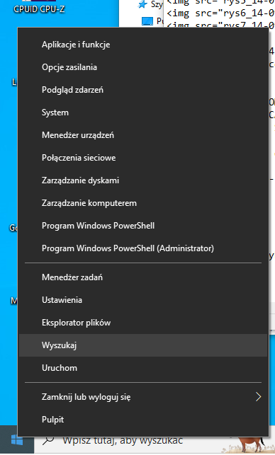
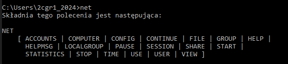
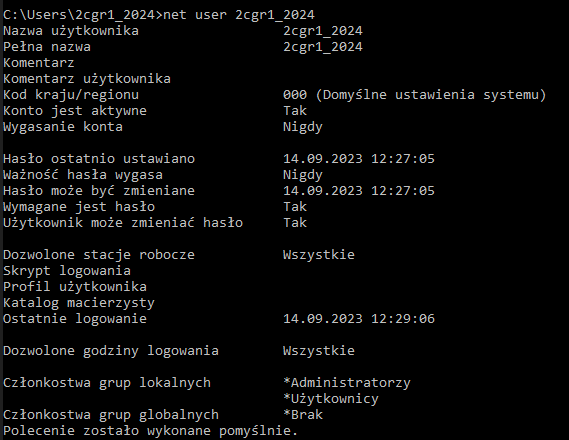
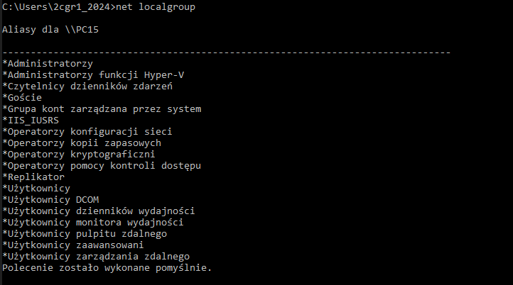

C:\Users\2cgr1_2024>net
Składnia tego polecenia jest następująca:
NET
[ ACCOUNTS | COMPUTER | CONFIG | CONTINUE | FILE | GROUP | HELP |
HELPMSG | LOCALGROUP | PAUSE | SESSION | SHARE | START |
STATISTICS | STOP | TIME | USE | USER | VIEW ]
Konta uľytkownik˘w dla \\PC15
-------------------------------------------------------------------------------
2cgr1 2cgr1_2024 2cgr2
2cgr2_2024 2Dgr1 2dgr2
2egr1_2024 3cgr1_2024 3dgr1
Administrator Go† klasa
Konto domylne uczen WDAGUtilityAccount
Polecenie zostao wykonane pomylnie.
Nazwa uľytkownika 2cgr1_2024
Pena nazwa 2cgr1_2024
Komentarz
Komentarz uľytkownika
Kod kraju/regionu 000 (Domylne ustawienia systemu)
Konto jest aktywne Tak
Wygasanie konta Nigdy
Haso ostatnio ustawiano 14.09.2023 12:27:05
Waľno† hasa wygasa Nigdy
Haso moľe by† zmieniane 14.09.2023 12:27:05
Wymagane jest haso Tak
Uľytkownik moľe zmienia† haso Tak
Dozwolone stacje robocze Wszystkie
Skrypt logowania
Profil uľytkownika
Katalog macierzysty
Ostatnie logowanie 14.09.2023 12:29:06
Dozwolone godziny logowania Wszystkie
Czonkostwa grup lokalnych *Administratorzy
*Uľytkownicy
Czonkostwa grup globalnych *Brak
Polecenie zostao wykonane pomylnie.
Aliasy dla \\PC15
-------------------------------------------------------------------------------
*Administratorzy
*Administratorzy funkcji Hyper-V
*Czytelnicy dziennik˘w zdarzeä
*Gocie
*Grupa kont zarzĄdzana przez system
*IIS_IUSRS
*Operatorzy konfiguracji sieci
*Operatorzy kopii zapasowych
*Operatorzy kryptograficzni
*Operatorzy pomocy kontroli dost©pu
*Replikator
*Uľytkownicy
*Uľytkownicy DCOM
*Uľytkownicy dziennik˘w wydajnoci
*Uľytkownicy monitora wydajnoci
*Uľytkownicy pulpitu zdalnego
*Uľytkownicy zaawansowani
*Uľytkownicy zarzĄdzania zdalnego
Polecenie zostao wykonane pomylnie.
Nazwa aliasu administratorzy
Komentarz Administratorzy majĄ peny i nieograniczony dost©p do komputera/domeny
Czonkowie
-------------------------------------------------------------------------------
2cgr1
2cgr1_2024
2cgr2
2cgr2_2024
2Dgr1
2dgr2
2egr1_2024
3cgr1_2024
3dgr1
Administrator
klasa
Polecenie zostao wykonane pomylnie.